Google Home
Was ist Google Home?
Google Home ist ein leistungsstarker Lautsprecher und Sprachassistent. Spielen Sie Ihre Musik ab. Rufen Sie Ihre Freunde an. Stellen Sie Fragen. Steuern Sie Ihr Zuhause. Es ist Ihr ganz persönliches Google, das immer bereit ist zu helfen.
Die Emby-Funktion ermöglicht es Nutzern, die Wiedergabe ihrer Mediathek oder des Live-TVs auf jedem Emby-kompatiblen Gerät zu steuern. Sobald Sie Ihr Emby-Konto erfolgreich mit Google Home verknüpft und den Fernzugriff auf dem Emby-Server konfiguriert haben, können Sie die Wiedergabe Ihrer Filme, TV-Sendungen, Musik oder des Live-TVs auf Ihren Geräten mit Ihrer Stimme steuern.
Erste Schritte
Es wird vorausgesetzt, dass Sie bereits ein Google Home eingerichtet haben. Die Emby-Integration mit Google Home befindet sich aufgrund von Änderungen von Google, durch die einige Funktionen eingestellt wurden, derzeit in der Alpha-Testphase. Infolge dieser Änderungen wurde der Google Home-Skill von Emby Home in Emby Remote umbenannt.
Voraussetzungen
Es ist notwendig, dass Emby Connect für das Emby-Server-Benutzerkonto verwendet wird und der Emby-Server über einen konfigurierten und funktionierenden Fernzugriff verfügt. Sichere Verbindungen für den Emby-Server sind nicht erforderlich, es sei denn, Sie benötigen den Amazon Alexa Service mit Emby.
Warum ist Emby Connect erforderlich?
Emby Connect wird verwendet, um Ihre Serverinformationen an Google Home zu übermitteln.
Warum ist Emby Server Remote-Zugang erforderlich?
Fernzugriff ist erforderlich, da Google Home auf diese Weise mit dem Server verbindet.
Alpha-Phase Schritte
Zugang erhalten - Senden Sie eine Nachricht an hatharry, um Zugang zum Emby Remote Projekt innerhalb von Google Home zu beantragen. Bitte geben Sie Ihre Google Home E-Mail-Adresse an.
Starten des Alpha-Zugriffs - Sobald der Zugang gewährt wurde, gehen Sie zur Google Home Konsole und melden sich mit Ihrem Google Home Konto an. Sie sehen das emby-remote Projekt. Wählen Sie es aus und gehen Sie durch die Bildschirme der Google Nutzungsbedingungen.
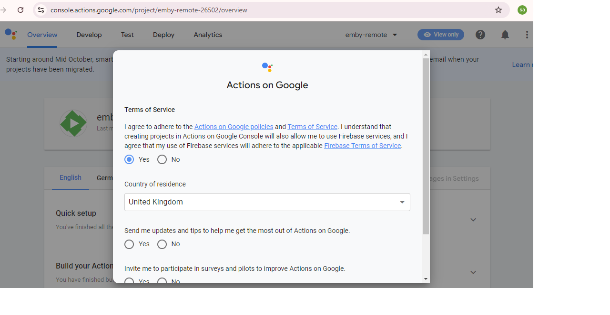
Danach müssen Sie das Emby Remote Testing aktivieren, die Schritte dazu sind hier beschrieben: Testen aktivieren.
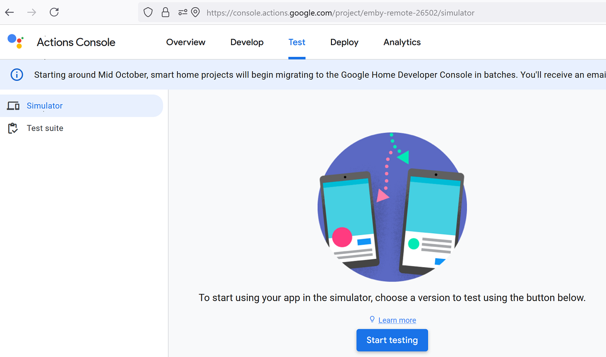
Sie werden mehrere Versionen im Dropdown sehen.
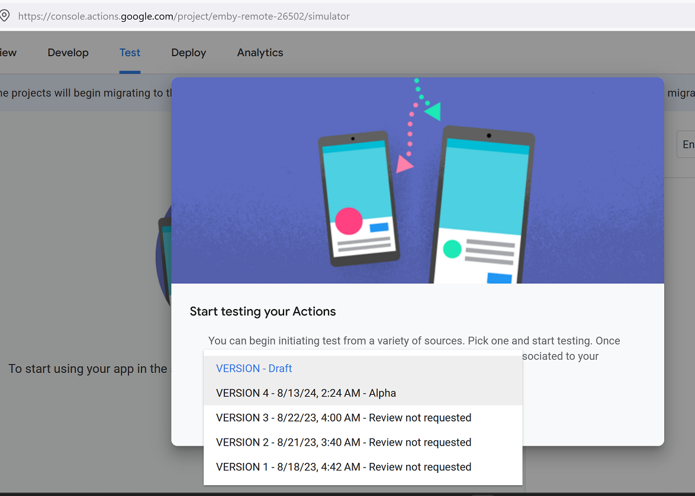
Wählen Sie die neueste Alpha-Version.
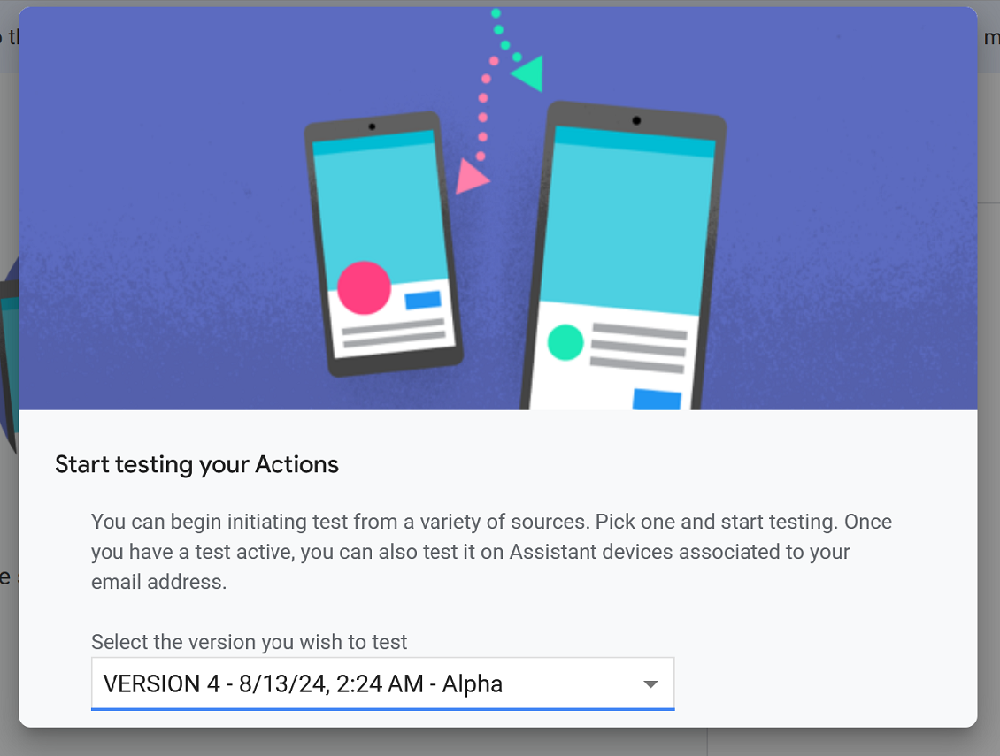
Feedback - Probleme, die in dieser Phase auftreten, sollten im Forum zu diesem Thema veröffentlicht werden.
Beachten Sie, dass Chromecast aufgrund von Einschränkungen seitens Google derzeit nicht kompatibel ist.
Emby Remote Einrichtung
Wenn Sie ein Smartphone oder Tablet verwenden, können Sie die Google Assistant App installieren, um mit der Google Home App die Steuerbefehle zu Emby Remote zu verwenden.
Öffnen Sie auf dem Smart-Gerät die Google Home App.
Wählen Sie die Registerkarte Geräte und dann Gerät hinzufügen.

Wählen Sie den Typ Funktioniert mit Google Home.
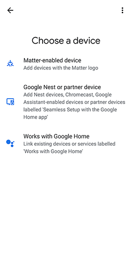
Auf dem nächsten Bildschirm sehen Sie die Liste der verfügbaren Funktionen.
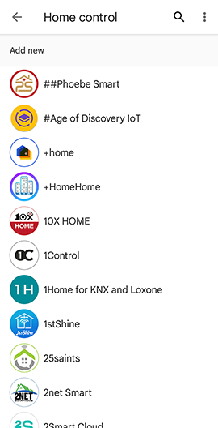
Verwenden Sie die Suche, um nach Emby Remote zu suchen. Geben Sie einfach emby in das Suchfeld ein. Dadurch sollte die emby remote Funktion gefunden werden. Falls nicht, überprüfen Sie, ob Sie darum gebeten haben, zum Alpha-Test hinzugefügt zu werden und dass Sie das Testen innerhalb der Projektwebseite aktiviert haben, wie oben beschrieben.
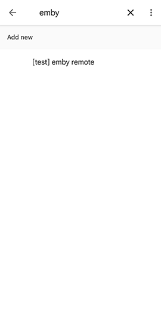
Google Home Konto-Verknüpfung
Beim ersten Aufruf von Emby Home werden Sie aufgefordert, Ihr Emby-Konto zu verknüpfen. Geben Sie Ihre Emby-Connect-Zugangsdaten ein und wählen Sie Ihren Server aus. Dadurch wird die Funktion aktiviert und funktioniert über alle Ihre mit Ihrem Google-Konto verknüpften Google Home Geräte hinweg.
Sie werden folgende Bildschirme sehen, die Sie zur Emby Connect-Anmeldung führen.
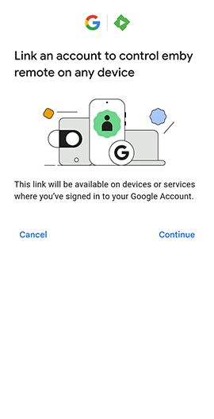

Nachdem Sie sich mit dem Emby Connect Konto angemeldet haben, wird der Emby-Server angezeigt.
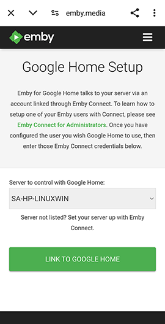
Wenn Sie mehr als einen Server mit Benutzernkonten haben, die mit diesem Emby Connect Konto verknüpft sind, sehen Sie ein Dropdown zur Auswahl.
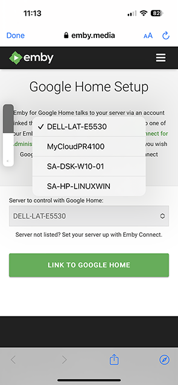
Wählen Sie den Server aus, der für Emby Remote verwendet werden soll und jetzt verknüpft ist.
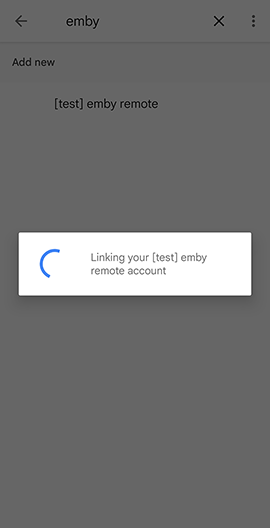
Sie werden dann dazu aufgefordert, die Geräte zum Hinzufügen auszuwählen und einen Raum zuzuweisen.
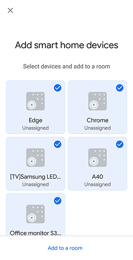
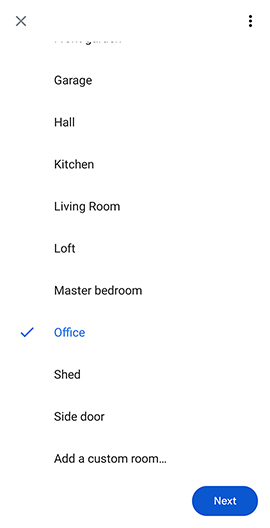
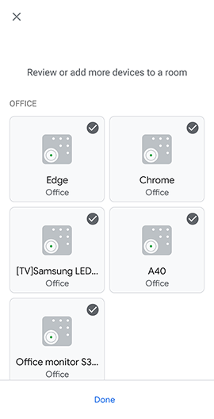
Sie können Ihr Emby-Konto anschließend verknüpfen oder die Verknüpfung aufheben, indem Sie im Google Home App Einstellungen auswählen und im Abschnitt Dienste Funktioniert mit Google auswählen.
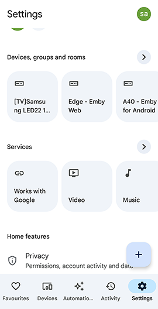
Sie sehen die emby-remote Funktion.
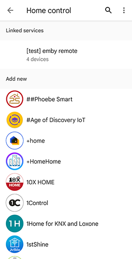
Die Auswahl ermöglicht es Ihnen, die Verknüpfung aufzuheben oder die Funktion erneut zu verknüpfen.
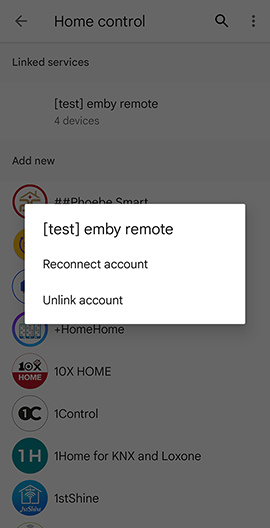
Mein Server ist nicht auswählbar, was kann ich tun?
Falls Sie kein Emby-Konto haben, folgen Sie den Schritten hier, andernfalls:
- Auf Ihrem Server-Dashboard, Benutzer > Wählen Sie den Emby-Benutzer mit Emby Connect (grünes Wolkensymbol)
- Entfernen Sie den Benutzernamen oder die E-Mail aus dem Emby Connect Feld, drücken Sie Speichern.
- Fügen Sie die Informationen erneut hinzu, um die Emby Connect-Verknüpfung neu zu erstellen.
Fehler beim Auswählen des Servers, was kann ich tun?
Überprüfen Sie, ob die Emby Connect-Daten für den Emby-Server korrekt sind.
- Es ist am besten, diese Prüfung auf einem Remote-Gerät oder PC durchzuführen und nicht im lokalen Netzwerk.
- Öffnen Sie in einem Browser die Webseite https://app.emby.media, melden Sie sich an und wählen Sie Mit Emby Connect anmelden.
- Klicken Sie auf die ... Schaltfläche für den Server und wählen Sie Verbinden.
- Wenn Sie einen Fehler erhalten, stellen Sie fest, ob der Server von außerhalb des Netzwerks zugänglich ist. Wenn nicht, siehe Remote Setup.
Befehle
Wie man Google Home benutzt
- Es gibt mehrere Möglichkeiten, Befehle an die emby remote Google Home Funktion zu senden: MB Remote fragen {Befehl einfügen} Hey Google, MB Remote fragen {Befehl einfügen} Hey Google, {Befehl einfügen} und beim Verwenden von Google Assistant können Sie auch einfach den Befehl sagen. Es würde ihn an emby remote weiterleiten, wenn es sich um einen bekannten Befehl für die Funktion handelt.
- Gerätenamen können in der Google Home App geändert werden, indem das verknüpfte Gerät ausgewählt wird und dann Einstellungen gewählt werden. Das würde die Kommunikation mit Google Home erleichtern.
- Wenn die Gerätenamen innerhalb der Emby Server-Einstellungen Gerät Bildschirms geändert werden, dann ist es notwendig, die Geräte zu synchronisieren.
Jederzeit können Sie die verknüpften Geräte mit diesem Befehl aktualisieren, Hey Google, Geräte synchronisieren
Wiedergabebefehle
- pause
<Gerätename> - resume
<Gerätename> - next
<Gerätename> - previous
<Gerätename> - stop
<Gerätename> - mute
<Gerätename> - unmute
<Gerätename> - seek
<Gerätename>to<xx>Minuten - turn down the volume on
<Gerätename> - turn up the volume on
<Gerätename> - set
<Gerätename>volume to<xx>%
Wenn Sie das verknüpfte Gerät in der Google Home App auswählen, werden die folgenden Steuerungen angezeigt
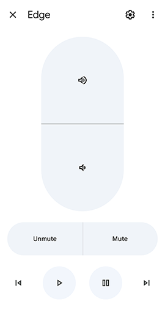
Geräte synchronisieren
- Geräte synchronisieren